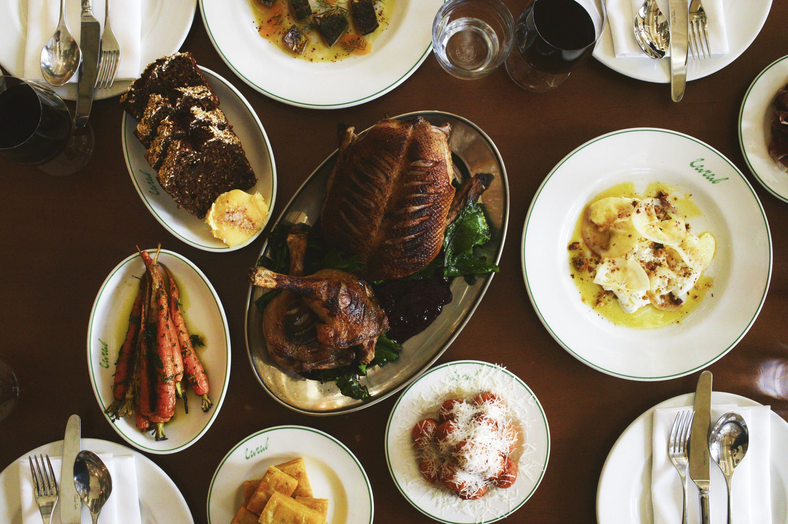
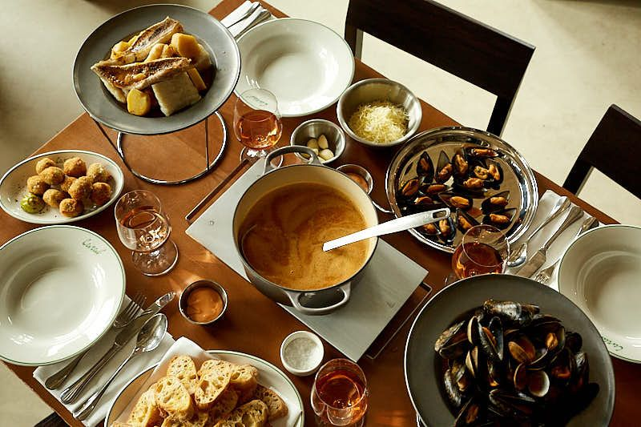
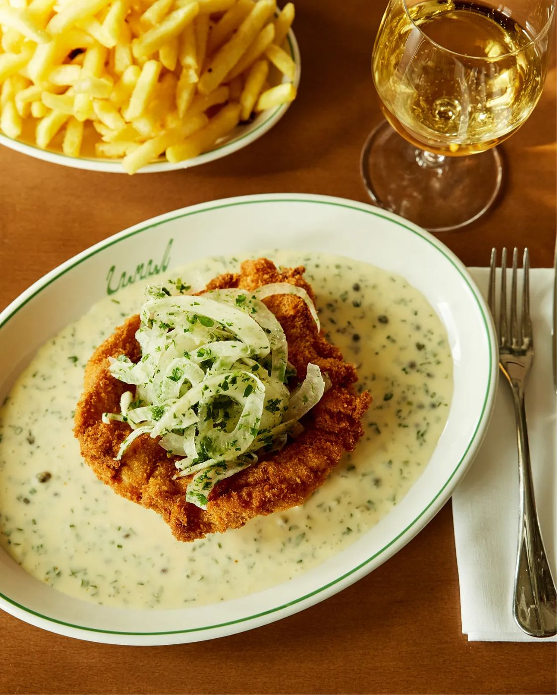
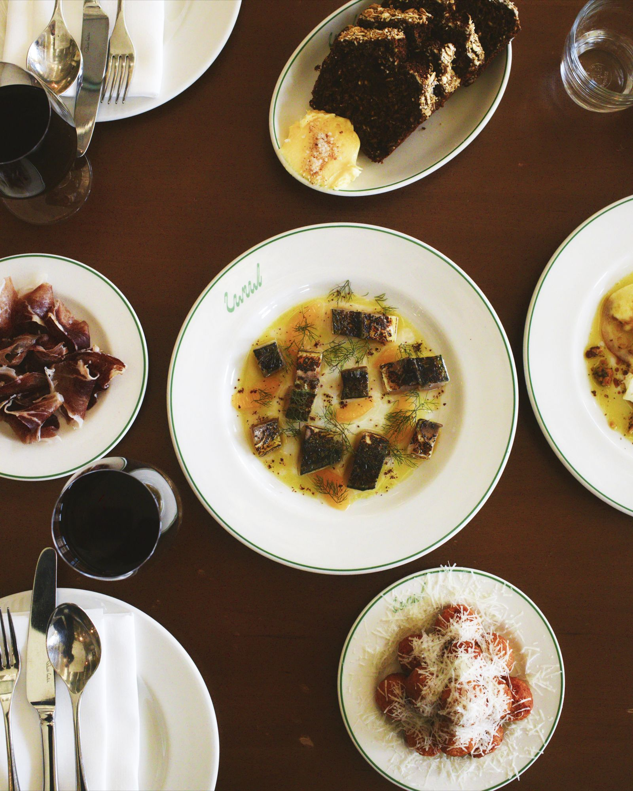
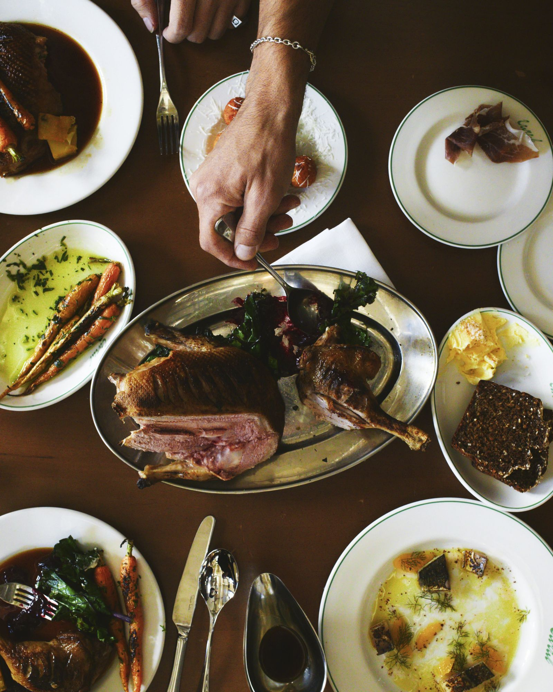
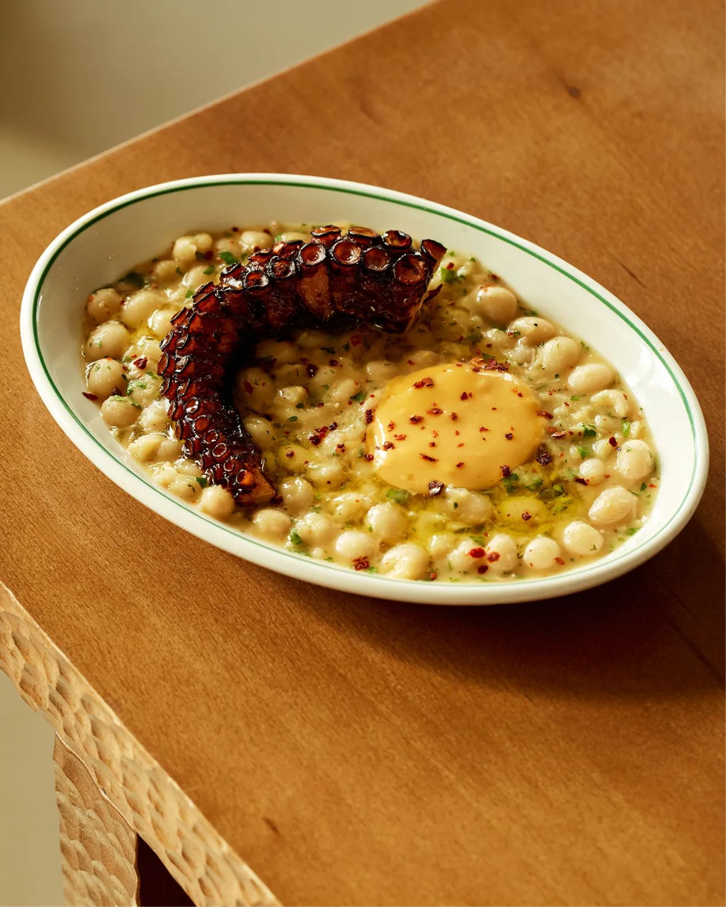

Lunch on the terrace, right on the water.Dinner by the water, until late.
Mon – Sat 12 – 10pm · Sun 12 – 8.30pm
Lunch on the terrace, right on the water.Dinner by the water, until late.
A modern European restaurant on the water’s edge of the Grand Union. A sun-soaked terrace, a menu that follows the seasons — and whatever the weather, it’s always sunny canal-side.

Soda bread and burrata, crab linguine, a glass of something cold. The terrace fills up first, so book a table outside.
Lunch turns into an Aperol, which turns into another. The bar and terrace don’t need a booking — just turn up.
The water goes gold, then pink, and the boats light up. It faces south, so you get every last minute of it.

Whole plaice, venison ragù, a bottle from somewhere you’ve never heard of. Everything’s for the table.
A Brown Butter Old Fashioned for the road. Then out along the towpath. Splish, splash.
Christmas by the water, a proper Marseille bouillabaisse, and room for the whole gang.

£68 festive sharing menu, a £100 Christmas Day lunch, and parties for up to 150.
Festive menus
Inspired by Marseille, served for the table. Arrive by boat or on foot — enquire to reserve.
The bouillabaisse
Tables of 8+, part or exclusive hire — up to 70 seated or 120 standing, terrace included.
Plan an eventChristmas Day lunch at Canal: £100 a head, everything to share, the canal outside. Tables are going.


Canal, Mason & Fifth
11b Woodfield Road
Westbourne Park, W9 2BA
Two minutes from Westbourne Park station. Come by boat and tell us when you book. Dogs welcome, paws on the floor.

New menus, supper clubs, summer parties and first dibs on Christmas. Not too often, promise.